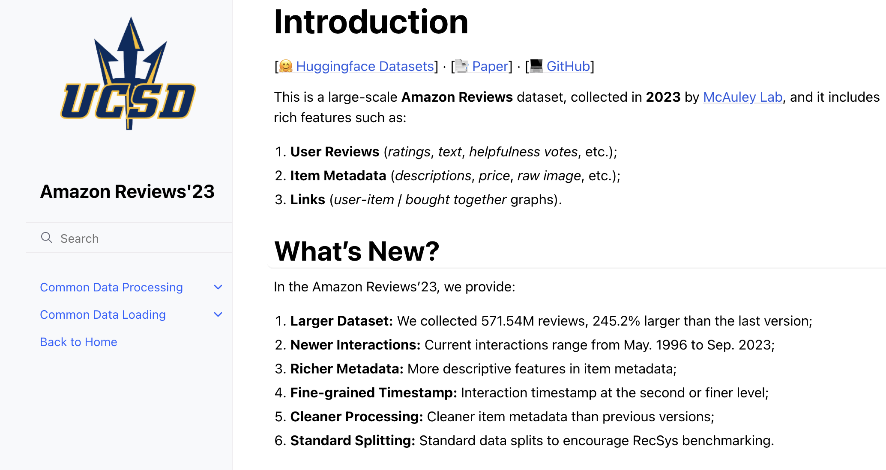
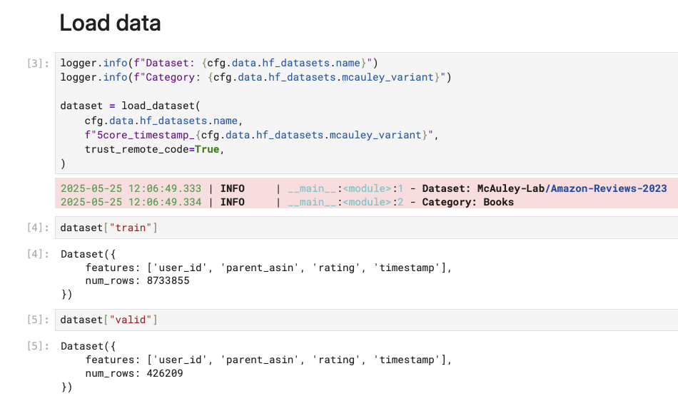
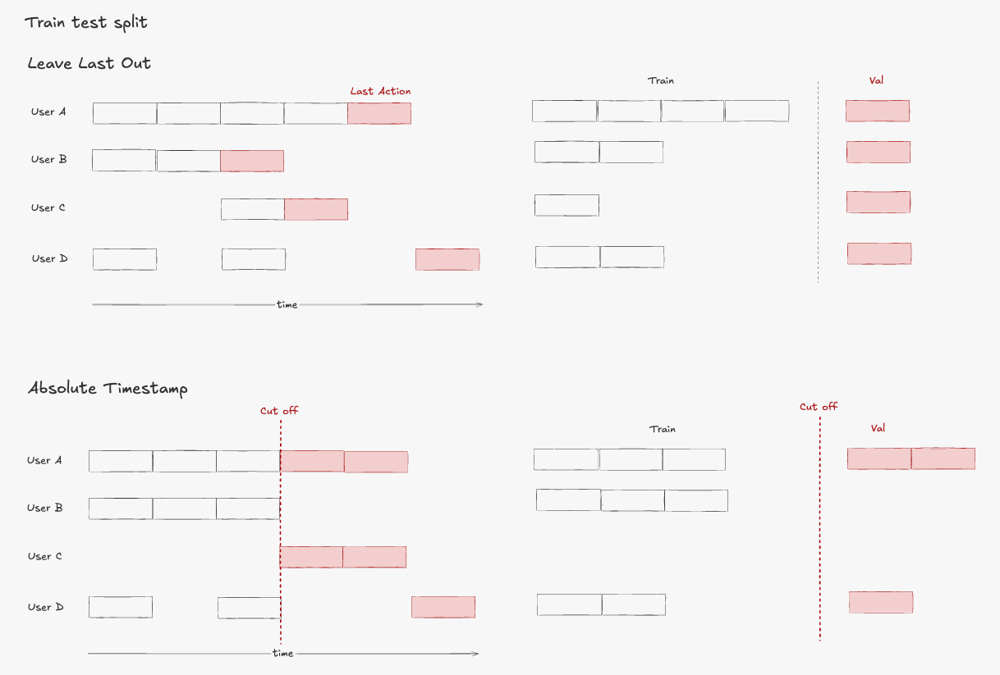

Introduction
In Chapter 1, we set up our development environment and explored the project architecture. Now it’s time to dive into the heart of any recommendation system: data. The quality of our recommendations depends entirely on how well we understand, process, and engineer features from our data.
This chapter focuses on the data pipeline from raw data to model-ready features. We’ll explore the Amazon product dataset, understand user-item interaction sequences, and build the feature engineering pipeline that will power our session-based recommender.
All code for this chapter is available in the notebooks/000-prep-data.ipynb and notebooks/001-features.ipynb files in the project repository.
Dataset Overview: Amazon Reviews 2023
A good dataset for this kind of sequential recommendation project would typically have the following characteristics:
- Temporal richness: Each interaction has a timestamp, enabling sequence modeling
- Scale: Millions of interactions across thousands of users and items
- Real-world patterns: Authentic user behavior with natural sparsity
Among the well-known public datasets, I chose the Amazon Reviews 2023 dataset from the McAuley Lab, specifically the “Books” category. Beyond the characteristics above, this dataset has other useful features—like reviews for both users and items—with plenty of observations to work with.


The main schema of the dataset is as simple as follows:
# From cfg/common.yaml
data:
user_col: "user_id"
item_col: "parent_asin"
rating_col: "rating"
timestamp_col: "timestamp"- 1
- Unique user identifier
- 2
- Product identifier (in our case, the ASIN—Amazon Standard Identification Number)
- 3
- User rating (1-5 scale)
- 4
- Interaction timestamp
from src.cfg import ConfigLoader
# Load configuration
cfg = ConfigLoader("cfg/common.yaml")Throughout this project, we store most configuration in cfg/common.yaml. This design does not only make it easier for notebooks and scripts to access their inputs and outputs but also help us try different configurations quickly.
Data Sampling and Filtering
As ML is mostly about iterative development, the main rationale of sampling and filtering is to have a small but decent enough dataset to experiment different ideas fast. The more experiments we run, the more likely we would introduce improvements to our models.
What does it mean for a decent RecSys dataset? One of the key criteria is sparsity—the ratio of observed interactions to all possible user-item pairs.
To understand why sparsity is problematic, consider the interaction matrix where each cell represents a potential user-item interaction:
- Matrix size:
num_users × num_items(total possible interactions) - Actual interactions: Much smaller number of observed ratings/clicks
- Sparsity:
1 - (actual_interactions / (num_users × num_items))
The sparsity problem gets quadratically worse as datasets grow:
# Small dataset example
users = 1,000, items = 1,000 → possible interactions = 1M
actual interactions = 50,000 → sparsity = 95%
# Larger dataset
users = 10,000, items = 10,000 → possible interactions = 100M
actual interactions = 500,000 → sparsity = 99.5%Each new user adds an entire row of mostly empty interactions, and each new item adds an entire column of mostly empty interactions. Since users typically interact with only a tiny fraction of available items, the interaction matrix becomes increasingly sparse as the catalog grows.
In recommendation systems, interactions follow a long-tailed distribution—many users and items have only a few interactions. So while randomly sampling may work just fine for many ML use cases, we need to apply it a bit more carefully here. Ultimately we want to have a sample dataset where each user/item has at least X interactions.
The tricky part is that a basic random sampling of users and items would create sparsity cascade—a domino effect that breaks your dataset.
Here’s what happens: You start with users and items that look fine on their own. User A has 10 interactions, Item X has 15 interactions. When you remove User B, you also lose all of User B’s interactions with Item X. Suddenly Item X only has 8 interactions. Oops, now it’s too sparse, so you remove it too. But removing Item X means User A loses some interactions and might become too sparse as well.
It’s like pulling threads from a sweater—everything starts unraveling.
To solve this, we take an iterative approach. We gradually drop random users from the dataset while watching our conditions and sampling targets. The trade-off is that while it’s hard to get an exact predefined number of users and items, we can control the minimum acceptable thresholds:
# From cfg/common.yaml
sample:
sample_users: 10000
min_val_records: 5000
min_user_interactions: 5
min_item_interactions: 10- 1
- We need to ensure sufficient validation data to evaluate our models.
from src.sample import InteractionDataSampler
data_sampler = InteractionDataSampler(
user_col=cfg.data.user_col,
item_col=cfg.data.item_col,
sample_users=cfg.sample.sample_users,
min_val_records=cfg.sample.min_val_records,
random_seed=cfg.run.random_seed,
min_item_interactions=cfg.sample.min_item_interactions,
min_user_interactions=cfg.sample.min_user_interactions,
perc_users_removed_each_round=0.1,
debug=False,
)...
Randomly removing 2960 users - Round 18 started
After randomly removing users - round 18: num_users=29,605
Number of users 29,605 are still greater than expected, keep removing...
Randomly removing 2413 users - Round 19 started
After randomly removing users - round 19: num_users=24,137
Number of users 24,137 are still greater than expected, keep removing...
Number of val_df records 4,282 are falling below expected threshold, stop and use `sample_df` as final output...
len(sample_users)=19,734 len(sample_items)=7,388In the end, we won’t have exactly 10,000 users, but the numbers will be close. The distribution of interactions is shown below:
{kind=link}
Train-Test Split
After sampling our data, we need to split it into a train and validation dataset to evaluate our models. The validation dataset plays a critical role in providing an estimate of how well the model performs on unseen data.
There are two main types of train-test-split in RecSys:

From what I’ve seen, last-one-out is used more in academic settings, while absolute timestamp is more common in industry. This makes sense from the perspective that any model deployed in production gets tested against future data.
Feature Engineering
ID Mapping: From Strings to Indices
As discussed in Chapter 1, we’re modeling this problem with neural networks. Deep learning models work with numerical indices, not string IDs. So we use our IDMapper to provide deterministic mapping from user and item IDs to indices:
from src.id_mapper import IDMapper
user_ids = train_df[cfg.data.user_col].values
item_ids = train_df[cfg.data.item_col].values
unique_user_ids = list(set(user_ids))
unique_item_ids = list(set(item_ids))
idm = IDMapper()
idm.fit(unique_user_ids, unique_item_ids)
# Save for later use in model serving
idm.save("data/idm.json")
# Below is the example output of the indice mapping for user IDs:
display(idm.user_to_index){
"AE224PFXAEAT66IXX43GRJSWHXCA": 0,
"AE225Y3KDZ44DHLUKLE4RJ63HC5Q": 1,
"AE226YVDC3MAGJZMZ4IBGE7RFJSQ": 2,
"AE22EJZ4354VB7MN4IE2CDGHA2DQ": 3,
"AE22O3TURLPFCJKL7YCX5CPF22OA": 4
}Sequence Generation
At this point, you might wonder about the sequences I mentioned earlier. How does user-item rating data relate to sequences?
Traditional collaborative filtering approaches like Matrix Factorization only use the user-item rating matrix. But one important signal gets left out: the timestamps.
The key insight is simple: when a user interacts with items over time, those interactions tell a story. We group each user’s interactions chronologically to create sequences of items, with the assumption that items a user engages with have meaningful relationships to each other.
Let’s trace through an example to understand how sequence generation works:
# User interactions over time:
# Time 1: User buys "Python Programming" (item_indice: 42)
# Time 2: User buys "Machine Learning" (item_indice: 73)
# Time 3: User buys "Deep Learning" (item_indice: 91)
# Generated sequences:
# Row 1: item_sequence = [-1, -1, ..., -1] # No previous items
# Row 2: item_sequence = [-1, -1, ..., 42] # Previous: Python book
# Row 3: item_sequence = [-1, -1, ..., 42, 73] # Previous: Python, ML books# Sample DataFrame
data = {
"user_indices": [0, 0, 1, 1, 1],
"item_indices": [0, 1, 2, 3, 4],
"timestamp": [0, 1, 2, 3, 4],
"ratings": [1, 4, 5, 3, 2],
}
df = pd.DataFrame(data)
# Generate the item sequences
df_with_sequences = generate_item_sequences(
df,
user_col="user_indices",
item_col="item_indices",
timestamp_col="timestamp",
sequence_length=3,
padding=True,
padding_value=-1,
)
display(df_with_sequences){kind=link}
As you can see, the above item_sequence column contains the sequence of items in chronological order which holds the context for the model to understand user preferences and make sequential predictions.
In this project, we use the user’s last 10 items as the sequence length, but this is configurable. The choice depends on experimentation, but generally there’s a trade-off: longer sequences provide more context but use more memory, while shorter sequences focus on recent items and process faster.
Do take note that we need to pad sequences to the same length so we can batch process them in our PyTorch model.
# From cfg/common.yaml
train:
sequence:
sequence_length: 10 # Keep last 10 items as contextRecap
In this chapter, we covered:
- Data Sampling and Filtering: We discussed problems with basic random sampling of dyadic data and introduced our iterative sampling approach
- ID Mapping: We converted string IDs to numerical indices to work with PyTorch model
- Sequence Generation: We created item sequence features based on user’s chronological interactions
All code for this chapter is available in the notebooks/000-prep-data.ipynb and notebooks/001-features.ipynb files in the project repository.
What’s Next
In Chapter 3, we’ll tackle the critical challenge of negative sampling. If our model only sees positive interactions (ratings), it can’t learn meaningful patterns for generalization. We need to generate negative examples so the model can distill the patterns by learning to distinguish between positive and negative interactions.
If you find this tutorial helpful, please cite this writeup as:
Quy, Dinh. (May 2025). Building Real-time RecSys Chapter 2 - Understanding the Data and Feature Engineering. dvquys.com. https://dvquys.com/projects/real-time-seq-recsys/c2/.